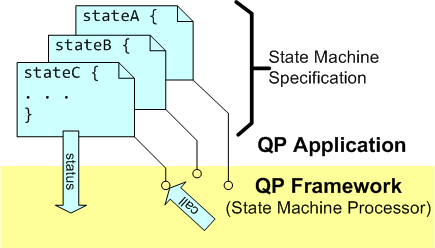
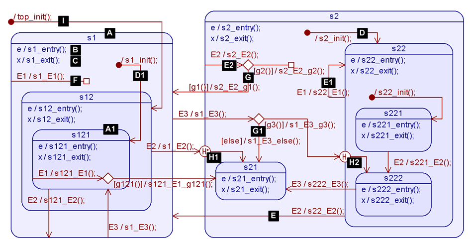
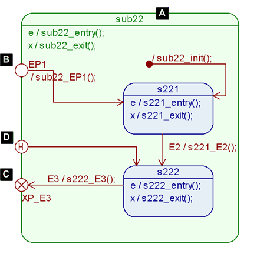
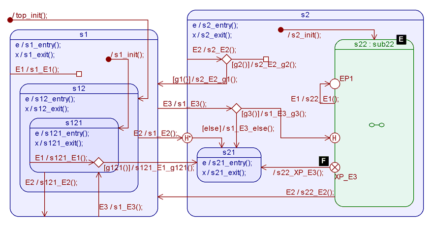

EventsActive Objects
The behavior of event-driven components (Active Objects, as well as passive event-driven objects) is specified in QP Applications through Hierarchical State Machines (a.k.a. UML statecharts). The main effort of QP Application developers typically goes into elaborating the internal state machines of the various objects in the QP Application. Therefore the description of state machine features and associated requirements is provided early in this SRS document.
State Machine Implementation Strategies
State Machines, and Hierarchical State Machines, in particular, can be implemented in many different ways. A specific way of implementing a state machine will be called here a State Machine Implementation Strategy, and it can be characterized by the following properties:
- efficiency in time (CPU cycles)
- efficiency in data space (RAM footprint)
- efficiency in code space (ROM footprint)
- monolithic vs. partitioned with various levels of granularity
- maintainability (with manual coding)
- maintainability (via automatic code generation)
- traceability from design (e.g., state diagram) to code
- traceability from code back to design
- other, quality attributes (non-functional requirements)
No single State Machine Implementation Strategy can be optimal for all circumstances, and therefore QP Framework shall support multiple and interchangeable strategies (see RQP102).
Dispatching Events to a State Machine in QP Framework
The event processing inside a state machine is called dispatching an event to the state machine, and it requires interaction between the QP Framework and the QP Application:

Event Dispatching to a State Machine in QP Framework
State Machine Specification
The "State Machine Specification" is provided inside the QP Application and is prepared according to the rules defined by the chosen State Machine Implementation Strategy in QP Framework. Typically an implementation strategy represents a state machine as several elements, such as states, transitions, etc.
The "State Machine Specification" can mean state machine code (when the state machine is coded manually) or a state machine model (when the state machine is specified in a modeling tool, like "QM"). Either way, it is highly recommended to think of the state machine implementation as the specification of state machine elements, not merely code. This notion of "specifying" a state machine rather than coding it can be reinforced by selecting an expressive and fully traceable state machine implementation strategy, see RQP103. The advantage of a traceable implementation is that each artifact at all levels of abstraction (design to code) unambiguously represents an element of a state machine.
State Machine Processor
A state machine is executed in QP Framework by the "State Machine Processor" that decides which elements of the "State Machine Specification" to call (see also srs_intro_inv). Once called, the chosen part of the "State Machine Specification" executes some actions and returns back to the "State Machine Processor" (QP Framework) with the status information as to what has happened. For example, the returned status might inform the "State Machine Processor" that a state transition needs to be taken, or that the event needs to be propagated to the superstate in the hierarchical state machine.
Run To Completion (RTC) Processing
The "State Machine Processor" is a passive software component that needs to be explicitly called from some control thread to dispatch each event to the given state machine object. The most important restriction is that the dispatch operation must necessarily run to completion (Run-to-Completion processing) before another event can be dispatched to the same state machine object.
- Note
- RTC event processing does NOT mean that a state machine has to monopolize the CPU until the RTC step is complete. In a multithreading environment, other threads or interrupts (not related to the thread context of the busy state machine) can be running, possibly preempting the currently executing state machine. But after every preemption, the preempted state machine picks up where it left off and continues processing the current event, eventually completing its RTC step.
RTC event processing also means that a state machine should NOT make blocking calls (e.g., a time-delay or semaphore-wait), because every blocking call represents waiting for an event, which will be delivered after the call unblocks. The problem is that such a "backdoor" event is delivered before the original RTC step completes, thus violating the RTC semantics. Blocking inside a state machine also extends the RTC processing and makes the state machine unresponsive to new events.
Requirements
RQP101
QP Framework shall provide support for hierarchical state machines both for Active Objects and for passive event-driven objects in the Application
- Amplification
- Support for hierarchical state machines (HSMs) means that QP Framework will provide a set of rules for "State Machine Specifications" in the Application as well as the matching implementation of the "State Machine Processor" to dispatch events to the HSMs.
RQP102
QP Framework shall support multiple and interchangeable State Machine Implementation Strategies
- Amplification
- QP Application can choose the State Machine Implementation Strategy (out of a set of supported strategies) through the type of a state machine object. Based on that type, QP Framework shall then resolve the matching "State Machine Processor" (matching dispatch method) at run-time. Moreover, QP Framework shall allow Applications to add their State Machine Implementation Strategies, and QP Framework shall still resolve the matching (application-defined) dispatch method based on the type of the state machine object.
- Rationale
- Application-defined State Machine Implementation Strategies might be useful for special purposes, such as components with stringent performance requirements (but perhaps fewer state machine features) or test doubles (in TDD).
RQP103
QP Framework shall provide a State Machine Implementation Strategy "optimized for manual coding"
- Amplification
- "Optimized for manual coding" means that changing a single element in the state machine design (e.g., nesting of the state hierarchy) should require changing only a single matching element in the implementation.
- Note
- The State Machine Implementation Strategy "optimized for manual coding" imposes restrictions on the implementation strategy but does not mean that the code must be written manually. In the presence of a modeling tool, such code can also be generated automatically.
RQP104
QP Framework should provide a State Machine Implementation Strategy "optimized for automatic code generation"
- Amplification
- "Optimized for automatic code generation" means the implementation may contain some redundant information to improve the efficiency of the state machine execution. Also, such a strategy can support more advanced state machine features (see RQP130) than a strategy constrained by the limitations of "manual coding" (see RQP103).
- Rationale
- In automatically generated code not intended for manual maintenance, the restrictions of the "manual coding" can be relaxed. In that case, a State Machine Implementation Strategy "optimized for automatic code generation" offers the application developers a choice of higher-performance and/or more features than the strategy "optimized for manual coding." For example, an implementation may contain "transition tables" with information about the chains of state exit and entry actions to execute for a given transition (instead of determining the state exit and entry at run-time). This optimization might require adjusting multiple "transition tables" when changing the hierarchical nesting of a single state, which is considered unsuitable for manual coding (see RQP103). However, optimizations of that kind are trivial for an automatic code generator.
RQP105
All State Machine Implementation Strategies provided by QP Framework shall be bidirectionally traceable
- Amplification
- Bi-directional traceability of a State Machine Implementation Strategy means that the rules of the "State Machine Specification" are such that:
- Each state machine element in the design (in the diagram) is represented by exactly one element in the implementation; and
- Each state machine element in the implementation corresponds to exactly one element in the design (diagram).
- Rationale
- Traceability between design and implementation is a required property for many functional safety standards.
RQP110
All State Machine Implementation Strategies provided by QP shall allow Applications to easily access the current event
- Amplification
- The current event, with its Signal and Parameters, must be available during the RTC processing within the state machine. The access should be computationally inexpensive (e.g., via a pointer).
RQP111
All State Machine Implementation Strategies provided by QP shall allow Applications to easily access the instance variables associated with a given state machine
- Amplification
- One of the main characteristics of Active Objects is their strict encapsulation. While QP Framework cannot strictly enforce such encapsulation, the framework should allow the QP Application to hide such access from the outside of the AO. At the same time, the framework should allow for easy and computationally inexpensive access to the internal attributes of an Active Object from within the AO, such as from its internal state machine. A good example of implementing such a policy is the concept of class encapsulation in OOP, where the internal attributes are accessible to the class operations (e.g., via the
this pointer) and are harder to access from the outside.
RQP120
All State Machine Implementation Strategies provided by QP Framework shall support the state machine features specified in the sub-requirements
- Amplification
- The state diagram shown in Figure. 120 below demonstrates a Hierarchical State Machine with all features that need to be supported by all State Machine Implementation Strategies provided in QP Framework:

Fig. 120 Hierarchical State Machine diagram with labeled features corresponding to the sub-requirements- Note
- The hierarchical state machine shown in Figure 120, demonstrates only a subset of features found in UML Statecharts [5]. Most notably, the UML Statecharts features not supported in the QP Framework include "orthogonal regions" and several kinds of "pseudostates".
-
Additional, more-advanced features are supported only by the State Machine Implementation Strategy "optimized for automatic code generation", see RQP130.
RQP120A
All State Machine Implementation Strategies provided by QP Framework shall support states capable of holding hierarchically nested substates
- Amplification
- An example state is shown in Figure 120[A]. This is a composite state because it holds other states (called substates). A state that holds no other states is shown in Figure 120[A1]. Such a state is called a leaf state. The State Machines Implementation Strategies in QP need to represent both types of states. Moreover, it should be possible to simply add substates to a given state thus making it a composite state as well as remove substates, thus making it a leaf state. Also, it should be possible to simply change the nesting of a given state from one superstate to another (including moving it to the implicit "top" superstate).
RQP120B
All State Machine Implementation Strategies provided by QP Framework shall support entry actions to states
- Amplification
- Example entry actions to a state are shown in Figure 120[B]. Entry actions to a state are optional, meaning that a given state might specify entry actions or not. If any entry actions are defined in a given state, the State Machine Processor in QP must execute these actions whenever that state is entered. Also, entry actions to superstates must be always executed before entry actions to substates.
- Rationale
- Entry actions to a state provide an important mechanism to initialize that state context and QP must guarantee such initialization on any transition path leading to a given state.
RQP120C
All State Machine Implementation Strategies provided by QP Framework shall support exit actions from states
- Amplification
- Example exit actions from a state are shown in Figure 120[C]. Exit actions from a state are optional, meaning that a given state might specify exit actions or not. If any exit actions are defined in a given state, the State Machine Processor in QP must execute these actions whenever that state is exited. Also, exit actions to superstates must be always executed after exit actions from substates.
- Rationale
- Exit actions from a state provide an important mechanism to cleanup that state context, and QP must guarantee such cleanup on any transition path leading out of a given state.
RQP120D
All State Machine Implementation Strategies provided by QP Framework shall support nested initial transitions in composite states
- Amplification
- An example nested initial transition is shown in Figure 120[D]. A composite can have at most one initial transition nested directly in that state. The nested initial transition can have actions and can target any direct substate or indirect substate of the parent state (at a deeper level of state nesting). If a given state has an initial transition and other transition (regular or initial) targets that state, QP must execute the initial transition.
- Initial Transition Execution Sequence
- The execution sequence of nested initial transition is as follows:
- actions associated with the initial transition;
- entry actions to the target state configuration, starting with the states at the highest levels of nesting;
- if the main target state of the initial transition contains its nested initial transition, it should be executed according to the same rules, applied recursively.
- Examples
- The execution sequence for the initial transition nested directly in state "s2" in Figure 120 is as follows:
s2_init(); s22_entry(); s22_init(); s211_entry();
On the other hand, the execution sequence for the initial transition nested directly in state "s1" in Figure 120 is as follows:
s1_init(); s12_entry(); s121_entry();
- Note
- It is also legal in QP to have a composite state with substates, but without a nested initial transition. If such a composite state is the main target of a state transition, the state becomes the current state, without any of its substates becoming active.
RQP120E
All State Machine Implementation Strategies provided by QP Framework shall support transitions between states at any level of nesting
- Amplification
- An example of a transition is shown in Figure 120[E]. A transition in QP must have an explicit trigger, which is the Signal of the event that triggered the transition.
- Main-Source State
- The state where the transition originates is called the main-source and in QP this main-source state "owns" the transition. Please note that the main-source state might be different from the current state when the transition is "inherited" from a higher-level state.
- Main-Target State
- The state where the transition terminates is called the *main-target_. Please note that the main-target state might be different from the new current state after the transition when the main-target state is composite and contains a nested initial transition.
- Self-Transition
- In a special case of the main source being the same as the main target (see Figure 120[E1]), the transition is called self-transition.
- Transition Execution Sequence
- The execution sequence of a state transition is as follows:
- Actions associated with the transition, which might include the whole guard evaluation sequence;
- Exit actions from the source state configuration, starting with the states at the lowest levels of nesting, up to the
LCA(main-source, main-target) state, whereas LCA(s1, s2) denotes the state that is the Least Common Ancestor of states s1 and s2, based on the state containment hierarchy.
- Entry actions to the target state configuration, starting with the states at the highest levels of nesting. If the main-target state contains a nested initial transition, it should be executed according to the rules described in RQP120D.
- Transition Examples
- Assuming that "s222" is the current state, the execution sequence for the transition s22:E2 (see Figure 120[E]) is as follows:
s22_E2(); s222_exit(); s22_exit(); s2_exit(); s1_entry(); s1_init(); s12_entry(); s121_entry();
Assuming that "s121" is the current state, the execution sequence for the transition s1:E3 (Special Case 1) is as follows:
s1_E3(); s121_exit(); s12_exit(); s12_entry(); s121_entry();
Assuming that "s121" is the current state, the execution sequence for the transition s121:E1 (Special Case 2) is as follows:
s121_E2(); s121_exit(); s12_exit(); s1_init(); s12_entry(); s121_entry();
Assuming that "s222" is the current state, the execution sequence for the self-transition s22:E1 in (see Figure 120[E1]) is as follows:
s22_E1; s222_exit(); s22_exit(); s22_entry(); s22_init(); s221_entry();
- Note
- In a self-transition, the main-source is exited, and the main-target (same as main-source) is entered. Thus self-transition becomes an idiom for resetting a given state context by cleanly exiting and re-entering a given state.
- Attention
- The transition execution sequence in QP [PSiCC2:08] is different than in the UML Specification [UML 2.5], because the guard evaluation sequence is executed in QP before the exit from the source state configuration and entry to the target state configuration. It is necessary first to determine the main-target state of the transition based on the evaluation of guards. The guards' evaluation might also determine that the event is to be propagated to the higher-level states, or that only an internal transition should be executed, in which cases no states should be exited or entered at all. In the UML Specification [5], transition actions are executed after exiting the source state configuration but before entering the target state configuration, which immensely complicates the semantics and implementation of guards.
- Local State Transition Semantics
- In most state transitions, the main-source state is exited, and the main target is entered. The only exceptional cases are explained below:
Special Case 1: If the main-source state of the transition contains the main-target state (e.g., transition E3 in state "s1" in Figure 120), the main-source state is not exited.
Special Case 2: If the main-target state contains the main_source (e.g., transition E2 in state "s121" in Figure 120), the main-target is not entered.
- Note
- In the UML Specification [UML 2.5], Special Cases 1 and 2 correspond to the local state transition semantics.
RQP120F
All State Machine Implementation Strategies provided by QP Framework shall support internal transitions in states
- Amplification
- An example of an internal transition is shown in Figure 120[F]. This type of transition causes only the execution of the associated actions. Still, it never leads to a change of the current state, and consequently, it never causes execution of any state exit or state entry actions. An alternative name for internal transition is a *state reaction_.
- Rationale
- Internal transitions (state reactions) are very common in practice. Internal transitions are also different from self-transitions because an internal transition never causes execution of any state exit or state entry actions.
RQP120G
All State Machine Implementation Strategies provided by QP Framework shall support guard conditions to be attached to regular and internal transitions
- Amplification
- An example of a transition with an attached guard condition is shown in Figure 120[G]. A guard condition (or simply *guard_) is a Boolean expression that disables a given transition path when it evaluates to FALSE.
In QP, guard conditions are always "attached" to a transition via a choice pseudostate (UML Specification [5]). A given choice pseudostate may have multiple attached guards, each starting a separate transition path and associated with its own (optional) action.
- Disabled Transitions
- If all guards attached to a transition (via a choice pseudostate) evaluate to FALSE, the whole transition is disabled. Such a transition shall be treated as though it was not present, so the triggering event is propagated to the higher-level states in the state hierarchy.
- Guard Evaluation
- Conceptually, you can think of a choice pseudostate and the attached guard conditions as an
if-then-else sequence. Each guard is evaluated dynamically when the control reaches the guard in that sequence. For example, the following pseudocode shows the sequence for the transition s2:E2 (Figure 120[E2]):
s2_E2(); // action associated with the original transition
if (g1()) { // evaluate guard g1()
s2_E2_g1(); // action associated with the path following [g1()]
transition_to(s1); // regular state transition
}
else if (g2()) { // evaluate guard g2()
s2_E2_g2(); // action associated with the path following [g2()]
internal_transition(); // internal state transition
}
else { // disabled transition
propagate_to_superstate(top); // event not handled at this level
}
- Note
- The guard evaluation sequence determines the main-target of the transition. For example, in the guard evaluation sequence shown above, if the guard
g1() evaluates to TRUE, the main target is set to state "s1". Otherwise, if g2() evaluates to TRUE, the main target will not be set, and the State Machine Specification will return status to the QP State Machine Processor to indicate only an internal transition. Otherwise, if both g1() and g2() evaluate to FALSE, the whole transition is considered disabled, and the State Machine Specification will return status to the QP State Machine Processor to propagate the event to the higher-level state.
- The Complementary [else] Guard
- QP shall also support the special, complementary guard
[else] (see Figure 120[G1]), which will explicitly complement all other guards attached to the same choice pseudostate. For example, the following pseudocode shows the sequence for the transition s1:E3 (Figure 120):
s1_E3(); // action associated with the original transition
if (g3()) { // evaluate guard g3()
s1_E3_g3(); // action associated with the path following [g3()]
transition_to_deep_history_of(s22); // transition to history (deep)
}
else { // explicit complementary [else] guard
s1_E3_else(); // action associated with the path following [else]
transition_to(s21); // regular state transition
}
RQP120I
All State Machine Implementation Strategies provided by QP Framework shall support top-most initial transition that shall be explicitly triggered independently from instantiation of the state machine object
- Amplification
- An example top-most initial transition is shown in Figure 120[I]. The top-most initial transition has the same semantics as nested initial transitions (see RQP120D) except the top-most initial transition nests in the implicit "top" superstate and it is mandatory rather than optional.
The execution of the top-most initial transition is intentionally separated from the instantiation of the state machine object, to allow applications to fully control the initialization performed in the actions to the top-most initial transition.
- Rationale
- The instantiation of state machine objects might occur in an undefined order, even before the entry point into the application (before the
main() function in C++). This is typically before the target hardware or the underlying real-time kernel has been properly initialized.
RQP120H
All State Machine Implementation Strategies provided by QP Framework should support transitions to history; Both shallow and deep histories shall be supported
- Amplification
- An example of a transition to deep history is shown in Figure 120[H1]. An example of a transition path to shallow history is shown in Figure 120[H2]. Transitions to history (deep or shallow) apply only to composite states and represent the most recently active substate. In the case of deep history, the actual current substate is remembered upon the exit from the given composite state. In the case of shallow history, only the direct substate containing the current substate is remembered. Transition to state history means transitioning to that remembered substate. Upon initialization, when a given composite state has never been active before, the transition to history is initialized with the default history, which is the substate pointed to by the transition coming out of the history circle (e.g., Figure 120[H1]).
- Description
- To support transitions to history, QP Framework needs to supply a mechanism to access the current state (deep history) and the direct substate of the current state. This information needs to be stored upon the exit of a given composite state. Also, the QP Framework needs to transition dynamically to the stored history substate.
RQP120S
All State Machine Implementation Strategies provided by QP Framework might supply a method for checking if a state machine is in a given state
- Amplification
- The "is-in" state operation returns TRUE if the current state of the state machine is equal or is a substate of the given state. Otherwise, the "is-in" operation returns FALSE.
- Intent
- This operation is intended to be used only for state machines that run in the same thread of execution. For example, a given Active Object could use the "is-in" check on one of the "Orthogonal Components" owned by that Active Object.
RQP120T
All State Machine Implementation Strategies provided by QP Framework might supply the top-state
- Amplification
- The top-state is the ultimate root of state hierarchy and typically it is not rendered in the state diagrams. However, the concept can be useful in State Machine Specification as the superstate of states not nested in any other state. In case a given State Machine Implementation Strategy uses the concept of the top-state, QP Framework may provide a top-state element with the default behavior of silently ignoring all events.
RQP130
State Machine Implementation Strategy "optimized for automatic code generation" should support reuse of behavior via submachines
- Amplification
- A submachine is a composite state with all its nested substates and transitions packaged as a unit (submachine). This unit can then be instantiated inside a given state machine multiple times, wherever that particular composite state is needed. Each instance of a submachine is called submachine-state.
- Rationale
- Submachines are an important mechanism of reusing behavior inside state machines, similar to "macros" or "subroutines" in programming languages. A one-time definition of the submachine corresponds in this analogy to a "subroutine" definition. Each instance of the submachine corresponds to a "subroutine call".
To package a composite state as a unit (submachine), the submachine needs to provide a well-defined interface to the other parts of the state machine. This formal interface consists of entry segments, exit points, and history segments (Figure 130[B,C,D]).
- Note
- Submachines should not be confused with concurrently-active "orthogonal regions".


Figure 130 Submachine diagram (top) and State machine diagram with submachine-state (bottom). The labeled features corresponding to the sub-requirements
RQP130A
State Machine Implementation Strategy "optimized for automatic code generation" should allow applications to add multiple submachines to a given hierarchical state machine
- Amplification
- A submachine, similar to a composite state, can have its own entry actions and exit actions as well as an initial transition nested directly in this submachine.
A submachine added to a given host hierarchical state machine shall operate in the same context as the host state machine. In particular, the submachine shall have access to the same attributes as the host state machine.
- Rationale
- Submachines and their interfaces are typically difficult to implement within the constraints of manual coding. Therefore, the requirement for supporting submachines is limited to the State Machine Implementation Strategy optimized for automatic code generation.
RQP130B
The submachines should support entry points
- Amplification
- An example of an entry segment is shown in Figure 130[B]. An entry segment needs to have a name (unique within a given submachine) and needs to target a substate of a given submachine. An entry segment might also have actions to be executed after the submachine is entered, before any other actions in the submachine (such as submachine's entry action or any nested initial transition.)
RQP130C
The submachines should support exit points
- Amplification
- An example of an exit point is shown in Figure 130[C]. An exit point needs to have a name (unique within a given submachine) and its purpose is to provide a termination point for all state transitions that exit the submachine. Exit points don't have actions of their own.
RQP130D
The submachines should support history segments. Both shallow and deep histories shall be supported.
- Amplification
- An example of an history segment is shown in Figure 130[D]. History segments (deep or shallow) shall operate similarly as transitions to history in composite states.
RQP130E
State Machine Implementation Strategy "optimized for automatic code generation" should support submachine-states
- Amplification
- An example of an submachine state is shown in Figure 130[E]. A submachine state is an instance of the given submachine placed in a specific context of the host hierarchical state machine. The context is established by the connections made to the interface of the submachine exposed by the submachine state. Specifically, the context of a submachine state consists of the incoming transitions that terminate on the specific entry points and by exit segments originating on the specific exit points. Additionally, a submachine state can have its own transitions originating on its boundary and terminating on its boundary.
RQP130F
State Machine Implementation Strategy "optimized for automatic code generation" should support exit segments
- Amplification
- An example of an xit segments is shown in Figure 130[F]. An exit segment is similar to a transition, except it does not have a trigger, but instead it attaches to a given exit point of a submachine state.
EventsActive Objects